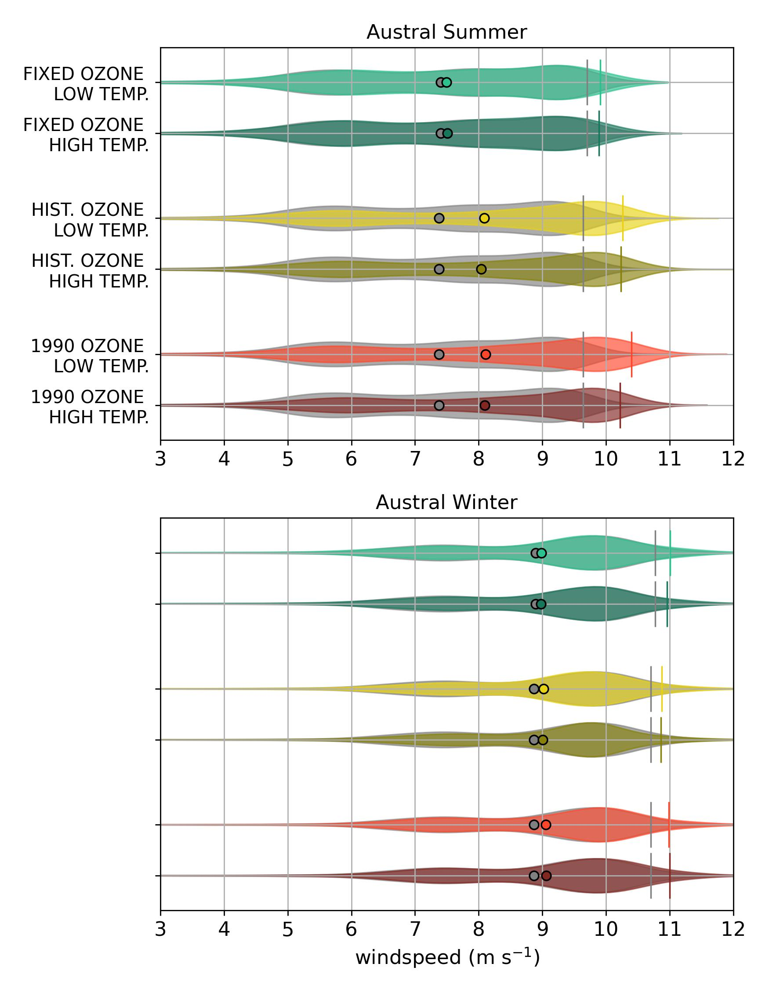
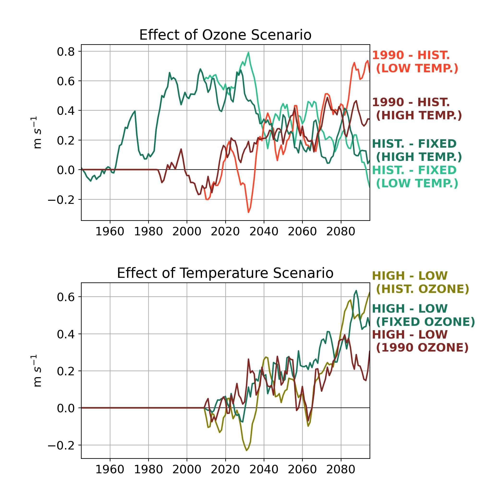

class: center, middle .title[Understanding the Changing Role of Stratospheric Ozone in Modifying the Southern Ocean Wind Structure] <!-- .subtitle[] --> .author[Tereza Jarníková$^{1}$, David Willis$^{1}$, Steven Rumbold$^{2}$, Colin Jones$^{3}$, Corinne Le Quéré$^{1}$] .author[RoSES, ORCHESTRA and ENCORE Annual Science Meeting] <br/> .date[July 12, 2022] <br/> <br/> <br/> .note[1- School of Environmental Sciences, University of East Anglia]<br/> .note[2- National Centre For Atmospheric Science, University of Reading]<br/> .note[3- National Centre For Atmospheric Science, University of Leeds] --- name: background class: center <br/> ##Overarching Research Objective <img style="width: 30%" src="./figs_2022_JUL_CELOS/NASA_and_NOAA_Announce_Ozone_Hole_is_a_Double_Record_Breaker.png"><br/> .note[South Pole O$_3$ concentration, September 2006, NASA] <br/><br/> .date[Using PLANKTOM, forced by atmospheric scenarios from UKESM1, <br/> we seek to determine the effect of changing ozone and greenhouse gas concentrations <br/> on Southern Ocean carbon cycling to the end of the 21st century.] --- name: background class: center <br/> ##Overarching Research Objective <img style="width: 30%" src="./figs_2022_JUL_CELOS/NASA_and_NOAA_Announce_Ozone_Hole_is_a_Double_Record_Breaker.png"><br/> .note[South Pole O$_3$ concentration, September 2006, NASA] <br/><br/> .date[Using PLANKTOM, forced by atmospheric scenarios from UKESM1, <br/> we seek to determine the effect of changing ozone and greenhouse gas concentrations <br/> on Southern Ocean carbon cycling to the end of the 21st century.] ##Intermediate Guiding Questions .date[1- How do changes in Southern Ocean wind patterns <br/> in the NERC/Met Office UKESM1-derived wind product <br/> compare to those in ERA5 and NCEP?] .date[2- How are the Southern Ocean wind patterns <br/> projected to change over the coming century <br/> under different ozone and SSP scenarios?] --- name: model class: center <br/> #Summer Wind Climatology and Decadal Changes <img style="width:97%" src="./figs_2022_JUL_CELOS/summer_clim.png"> The UKESM1 model shows similar spatial patterns and trends in the summer wind climatology as the ERA5 product.<br/><br/> Strong domain-wide increases in summer windspeed are visible, intensifying in the last 30 years. <br/><br/> The NCEP product shows slightly lower wind speeds (and stronger windspeed increases) than the other two. <br/><br/> <!-- http://127.0.0.1:8888/lab/workspaces/auto-z/tree/prelim_EVAL_forcing/CELOS-windclim.ipynb --> --- name: model class: center <br/> #Winter Wind Climatology and Decadal Changes <img style="width:97%" src="./figs_2022_JUL_CELOS/winter_clim.png"> Winter wind speeds are universally stronger, but increases are more subtle and less spatially cohesive. <br/><br/> The UKESM1 model shows similar spatial patterns and trends in the summer wind climatology as the ERA5 product.<br/><br/> The NCEP product again shows lower wind speeds but stronger wind speed increases than the other two products. <br/><br/> --- name: model class: center ##Windspeed Timeseries Comparison <img style="width:53%" src="./figs_2022_JUL_CELOS/windzonal.jpg"> Windspeed increases are stronger in summer than winter <br/> and are comparable between UKESM1 and ERA5. <br/><br/> NCEP windspeeds are continuously significantly lower than windspeeds <br/> in the other two products and show larger trends in both seasons. --- name: background class: center ##Scenarios of Windspeed Evolution over the 21st Century <br/> <br/> We will run 6 ozone/climate scenarios from 1940-2100, <br/> forcing PLANKTOM with UKESM1-derived atmospheric conditions: <br/><br/> <img style="width:70%" src="./figs_2022_JUL_CELOS/sspscen.png"> <br/> <br/> Here I examine historic and projected changes in wind speed under these 6 scenarios. <br/> <br/> .note[Fixed: Ozone depleting substances fixed at 1950 values.]<br/> .note[Historic: Ozone depleting substances evolve realistically through time.]<br/> .note[1990: Ozone depleting substances fixed at 1990 values.]<br/> <br/> .note[Low Temp.: SSP 1-2.6]<br/> .note[High Temp.: SSP 3-7.0] --- name: background class: center ##PDF of the Historical Southern Ocean Wind Climatology: 1940-1960 <img style="width:55%" src="./figs_2022_JUL_CELOS/wspd_1940-1960.jpg"> As expected, from 1940-1960 wind magnitudes are almost identical between 6 scenarios. <br/> Winter winds are stronger and somewhat less variable. --- name: background class: center ##PDF of the Historical Southern Ocean Wind Climatology: 1940-1960 <img style="width:55%" src="./figs_2022_JUL_CELOS/wspd_ghost_1940-1960.jpg"> As expected, from 1940-1960 wind magnitudes are almost identical between 6 scenarios. <br/> Winter winds are stronger and somewhat less variable. --- name: background class: center ##Southern Ocean Wind Climatology: Present-Day (2010-2030) <br/> Under the historic and 1990 ozone scenarios, much larger summer increases in windspeed <br/> have occurred to date than in the fixed ozone scenario. Winter increases have been more modest in all scenarios. --- name: background class: center ##Southern Ocean Wind Climatology: 2040-2060 <img style="width:55%" src="./figs_2022_JUL_CELOS/wspd_2040-2060.jpg"> <br/> By mid-century, the highest summer windspeed increases occur in the 1990 ozone, high temperature scenario. Temperature-dependent changes in windspeed increases start being visible in summer. --- name: background class: center ##Southern Ocean Wind Climatology: 2080-2100 <img style="width:55%" src="./figs_2022_JUL_CELOS/wspd_2080-2100.jpg"> <br/> Under the historic ozone scenario, temperature is the deciding factor in late-century windspeed evolution: <br/> In the high temp. scenario, summer winds continue speeding up, while in the low temp. scenario, they slow down. --- name: background class: center ##Summary of Projected Southern Ocean Wind Speed Changes <img style="width:95%" src="./figs_2022_JUL_CELOS/wspd_10yrmean.jpg"> <br/> Under the historical ozone scenario, temperature is the deciding factor in late-century wind speed evolution: <br/> In the high temp. scenario, summer winds continue speeding up, while in the lower temp. scenario, they slow down. --- name: background class: center ##Ozone and Greenhouse Gas Effects on Summer Southern Ocean Windspeed  Both ozone depletion and temperature increase drive windspeed increases, as expected. <br/> Due to ozone recovery in the historic ozone scenario, <br/> wind speeds in the historic and fixed ozone scenarios converge by end-of-century. --- name: background class: center ##Summary and Future Work <img style="width:75%" src="./figs_2022_JUL_CELOS/wspd_10yrmean.jpg"> <br/> 1. Both SSP and ozone concentration play a role in determining future wind speeds: high CO$_2$ and ozone depletion both act to increase wind speed. <br/> <br/> 2. Under a low-SSP scenario with ozone recovery, a reversal of the windspeed increases is possible by the end of the 21st century. <br/> <br/> 3. We are now running our ocean model under these six scenarios, and hope to discuss the effects of these changing wind climatologies on the carbon cycling soon. <br/> <br/> .note[T.Jarnikova@uea.ac.uk]<br/> .note[@tjarnikova on Twitter]